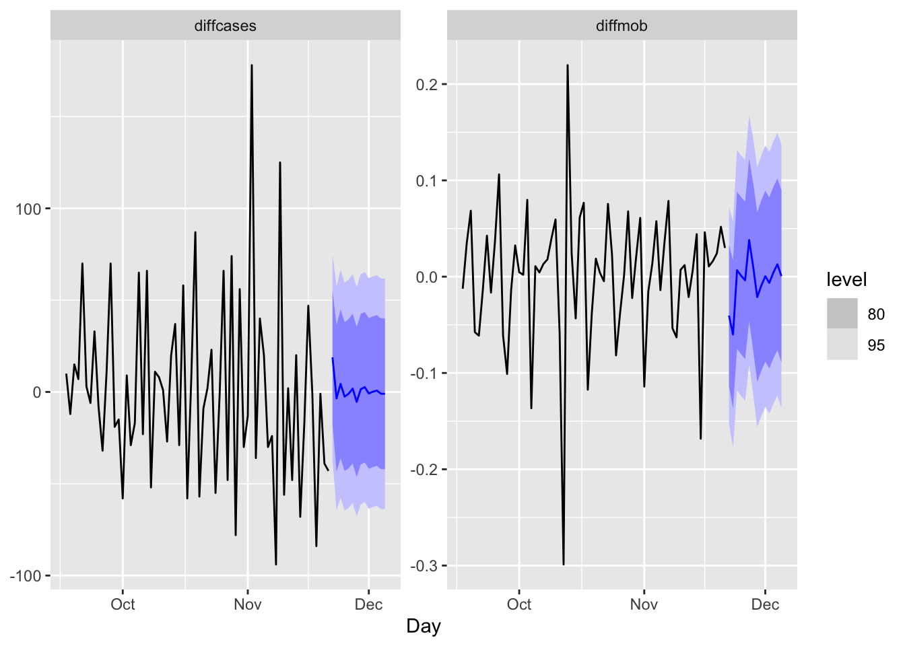
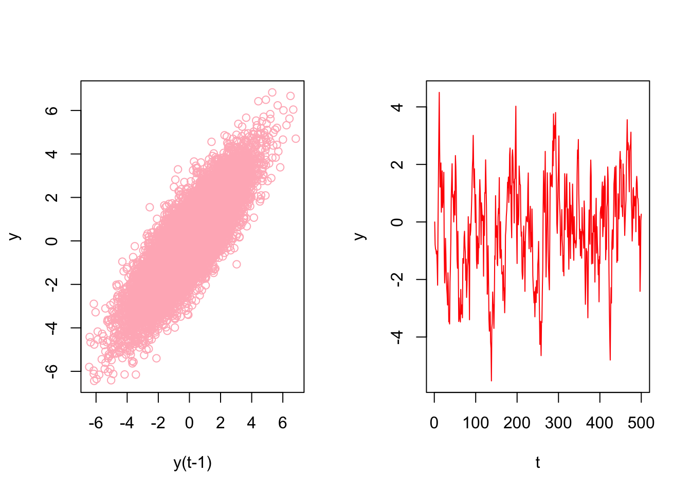
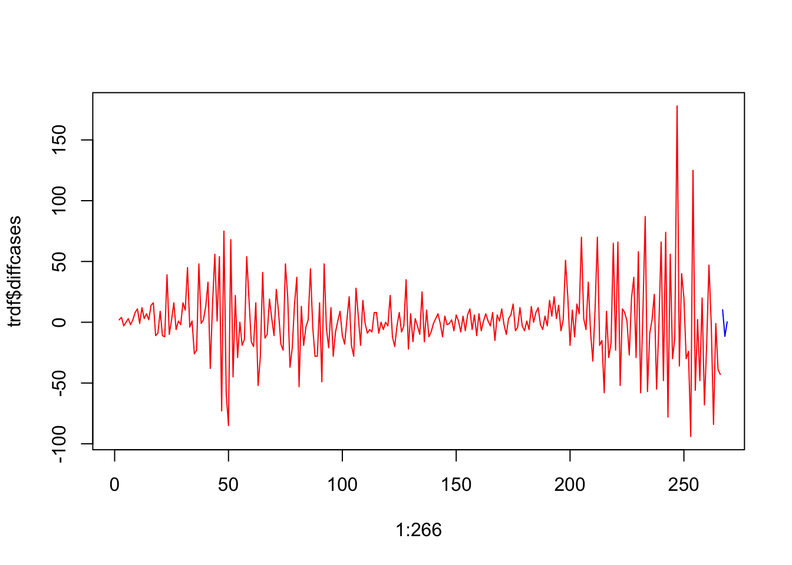

Chapter 23 Time Series Embedding
In general, forecasting models use either direct or recursive forecasting, or their combinations (See Taieb and Hyndman, 2012). The difference between these two methods is related to discussion on prediction accuracy and forecasting variance.
Recursive forecasting requires a parametric model and would face increasing forecasting error when the underlying model is not linear. Direct forecasting, however, can be achieved by a nonparametric predictive algorithm, while it may have a higher variance as the forecast horizon gets longer.
Multi-period recursive forecasting use a single time series model, like AR(1). With iterative substitutions of the estimated model, any forecast period of \(h\) can be computed. Let’s start with a simple AR(1) to see recursive forecasting:
\[ x_{t+1}=\alpha_0+\phi_1 x_t+\epsilon_{t} \]
If we use this AR(1) to have a 3-period forecast:
\[ \hat{x}_{t+1}=\hat{\alpha}_0+\hat{\phi}_1 x_t, \\ \hat{x}_{t+2}=\hat{\alpha}_0+\hat{\phi}_1 \hat{x}_{t+1}, \\ \hat{x}_{t+3}=\hat{\alpha}_0+\hat{\phi}_1 \hat{x}_{t+2} \] With iterative substitutions:
\[ \hat{x}_{t+1}=\hat{\alpha}_0+\hat{\phi}_1 x_t ~~~~ 1^{st} ~ \text{Period}\\ \hat{x}_{t+2}=\hat{\alpha}_0+\hat{\alpha}_0\hat{\alpha}_1+\hat{\phi}^2_1 x_{t} ~~~~ 2^{nd} ~ \text{Period}\\ \hat{x}_{t+3}=\hat{\alpha}_0+\hat{\alpha}_0\hat{\alpha}_1+\hat{\alpha}_0\hat{\alpha}^2_1+\hat{\phi}^3_1 x_t~~~~ 3^{rd} ~ \text{Period} \]
Of course, we can generalize it for \(h\) periods:
\[ \hat{x}_{t+h}=\hat{\alpha}_0 \sum_{i=1}^h \hat{\phi}_1^{i-1}+\hat{\phi}_1^h x_t \]
The estimated coefficients (\(\hat{\alpha}_0\), \(\hat{\phi}_1\)) are the same; hence, we need only one model for any period.
Alternatively, we can apply the direct multi-period forecasting, where a separate predictive model for each forecasting horizon between \(h\) and \(t\) is estimated. Here is the example with AR(1):
\[ x_{t+1}=\alpha_0+\alpha_1 x_t+\epsilon_{t}, \\ x_{t+2}=\beta_0+\beta_1 x_t+\epsilon_{t}, \\ x_{t+3}=\omega_0+\omega_1 x_t+\epsilon_{t}. \\ \]
And, the 3-period direct forecasts with three different models:
\[ \hat{x}_{t+1}=\hat{\alpha}_0+\hat{\alpha}_1 x_t ~~~~ 1^{st} ~ \text{Period}\\ \hat{x}_{t+2}=\hat{\beta}_0+\hat{\beta}_1 x_{t} ~~~~ 2^{nd} ~ \text{Period}\\ \hat{x}_{t+3}=\hat{\omega}_0+\hat{\omega}_1x_t~~~~ 3^{rd} ~ \text{Period} \]
23.1 VAR for Recursive Forecasting
The problem with a multi-period recursive forecasting becomes clear when we have multivariate model:
\[ y_{t+1}=\beta_0+\beta_1 y_t+\beta_2x_t+\epsilon_{t} \]
If we want a 2-period forecast,
\[ \hat{y}_{t+2}=\hat{\beta}_0+\hat{\beta}_1 \hat{y}_{t+1}+\hat{\beta}_2 \hat{x}_{t+1}, \]
Hence, \(\hat{x}_{t+1}\) has to be estimated. This can be done with a Vector Autorregressive (VAR) framework. A VAR model consists of multiple equations, one per variable. Each equation includes a constant and lags of all of the variables in the system.
\[ \begin{aligned} & y_{t}=c_1+\beta_{1} y_{t-1}+\beta_{2} x_{t-1}+\varepsilon_{t} \\ & x_{t}=c_2+\phi_{1} x_{t-1}+\phi_{2} y_{t-1}+e_{t} \end{aligned} \]
Each model is estimated using the principle of ordinary least squares, given that series are stationary. Forecasts in VAR are calculated with recursive iterations. Therefore, the set of equations generates forecasts for each variable. To decide the number of lags in each equation, the BIC is used.
Let’s have our COVID-19 data and include the mobility to our forecasting model.
library(tsibble)
library(fpp3)
load("~/Dropbox/ToolShed_draft/dftoronto.RData")
day <- seq.Date(
from = as.Date("2020/03/01"),
to = as.Date("2020/11/21"),
by = 1
)
tdata <- tibble(Day = day,
mob = data$mob,
cases = data$cases)
toronto <- tdata %>%
as_tsibble(index = Day)
toronto## # A tsibble: 266 x 3 [1D]
## Day mob cases
## <date> <dbl> <dbl>
## 1 2020-03-01 -0.0172 4
## 2 2020-03-02 -0.0320 6
## 3 2020-03-03 -0.0119 10
## 4 2020-03-04 0.0186 7
## 5 2020-03-05 0.0223 7
## 6 2020-03-06 -0.00626 10
## 7 2020-03-07 0.0261 8
## 8 2020-03-08 0.0273 10
## 9 2020-03-09 -0.0158 18
## 10 2020-03-10 -0.0521 29
## # … with 256 more rowsWe will estimate the recursive forecasts for 1 to 14 days ahead.
# We need make series stationary
trdf <- toronto %>%
mutate(diffcases = difference(cases),
diffmob = difference(mob))
# VAR with BIC
fit <- trdf[-1, ] %>%
model(VAR(vars(diffcases, diffmob), ic = "bic"))
glance(fit)## # A tibble: 1 × 6
## .model sigma2 log_lik AIC AICc BIC
## <chr> <list> <dbl> <dbl> <dbl> <dbl>
## 1 "VAR(vars(diffcases, diffmob), ic = \"bic\… <dbl[…]> -854. 1755. 1760. 1841.fit %>% report()## Series: diffcases, diffmob
## Model: VAR(5)
##
## Coefficients for diffcases:
## lag(diffcases,1) lag(diffmob,1) lag(diffcases,2) lag(diffmob,2)
## -0.4074 -105.6524 -0.0703 11.0374
## s.e. 0.0639 28.3643 0.0695 29.9761
## lag(diffcases,3) lag(diffmob,3) lag(diffcases,4) lag(diffmob,4)
## 0.0528 10.8093 -0.0123 -4.8989
## s.e. 0.0701 31.8601 0.0713 30.0019
## lag(diffcases,5) lag(diffmob,5)
## 0.0227 6.1099
## s.e. 0.0640 29.2678
##
## Coefficients for diffmob:
## lag(diffcases,1) lag(diffmob,1) lag(diffcases,2) lag(diffmob,2)
## 0e+00 -0.314 0e+00 -0.4688
## s.e. 1e-04 0.057 1e-04 0.0603
## lag(diffcases,3) lag(diffmob,3) lag(diffcases,4) lag(diffmob,4)
## 1e-04 -0.2931 -1e-04 -0.2664
## s.e. 1e-04 0.0641 1e-04 0.0603
## lag(diffcases,5) lag(diffmob,5)
## 3e-04 -0.4059
## s.e. 1e-04 0.0588
##
## Residual covariance matrix:
## diffcases diffmob
## diffcases 811.6771 -0.1648
## diffmob -0.1648 0.0033
##
## log likelihood = -853.64
## AIC = 1755.28 AICc = 1760.38 BIC = 1840.73fit %>%
forecast(h = 14) %>%
autoplot(trdf[-c(1:200), ])
We should have transformed both series by the Box-Cox transformation, but we ignored it above.
23.2 Embedding for Direct Forecast
For direct forecasting, we need to rearrange the data in a way that we can estimate 7 models for forecasting ahead each day of 7 days. We will use embed() function to show what we mean with rearranging data for AR(3), for example:
Y <- 1:10
Y <- embed(Y, 3)
colnames(Y) = c("Y(t)", "Y(t-1)", "Y(t-2)")
Y## Y(t) Y(t-1) Y(t-2)
## [1,] 3 2 1
## [2,] 4 3 2
## [3,] 5 4 3
## [4,] 6 5 4
## [5,] 7 6 5
## [6,] 8 7 6
## [7,] 9 8 7
## [8,] 10 9 8Now, the key point is that there is no a temporal dependence between each row so that shuffling this data after re-structuring it admissible. Let’s have an AR(1) example on this simulated data
# Stationary data rho < 1 but = 0.85
n <- 10000
rho <- 0.85
y <- c(0, n)
set.seed(345)
eps <- rnorm(n, 0, 1)
for (j in 1:(n - 1)) {
y[j + 1] <- y[j] * rho + eps[j]
}
ylagged <- y[2:n]
par(mfrow = c(1, 2))
plot(ylagged,
y[1:(n - 1)],
col = "lightpink",
ylab = "y",
xlab = "y(t-1)")
plot(y[1:500],
type = "l",
col = "red",
ylab = "y",
xlab = "t"
)
We will use an AR(1) estimation with OLS after embedding:
head(y)## [1] 0.0000000 -0.7849082 -0.9466863 -0.9661413 -1.1118166 -1.0125757y_em <- embed(y, 2)
colnames(y_em) <- c("yt", "yt_1")
head(y_em)## yt yt_1
## [1,] -0.7849082 0.0000000
## [2,] -0.9466863 -0.7849082
## [3,] -0.9661413 -0.9466863
## [4,] -1.1118166 -0.9661413
## [5,] -1.0125757 -1.1118166
## [6,] -1.4942098 -1.0125757And estimation of AR(1) with OLS:
y_em <- as.data.frame(y_em)
ar1 <- lm(yt ~ yt_1 - 1, y_em)
ar1##
## Call:
## lm(formula = yt ~ yt_1 - 1, data = y_em)
##
## Coefficients:
## yt_1
## 0.8496Now, let’s shuffle y_em:
# Shuffle
ind <- sample(nrow(y_em), nrow(y_em), replace = FALSE)
y_em_sh <- y_em[ind, ]
ar1 <- lm(yt ~ yt_1 - 1, y_em_sh)
ar1##
## Call:
## lm(formula = yt ~ yt_1 - 1, data = y_em_sh)
##
## Coefficients:
## yt_1
## 0.8496This application shows the temporal independence across the observations in the rearranged data give that model (AR) is correctly specified. This is important because we can use conventional machine learning applications on time series data, like random forests, which we see in the next chapter.
This re-arrangement can also be applied to multivariate data sets:
tsdf <- matrix(c(1:10, 21:30), nrow = 10)
colnames(tsdf) <- c("Y", "X")
first <- embed(tsdf, 3)
colnames(first) <- c("y(t)","x(t)","y(t-1)","x(t-1)", "y(t-2)", "x(t-2)")
head(first)## y(t) x(t) y(t-1) x(t-1) y(t-2) x(t-2)
## [1,] 3 23 2 22 1 21
## [2,] 4 24 3 23 2 22
## [3,] 5 25 4 24 3 23
## [4,] 6 26 5 25 4 24
## [5,] 7 27 6 26 5 25
## [6,] 8 28 7 27 6 26Now, we need to have three models for three forecasting horizons. Here are these models:
\[ \hat{y}_{t+1}=\hat{\alpha}_0+\hat{\alpha}_1 y_t + \hat{\alpha}_2 y_{t-1}+ \hat{\alpha}_3 x_t + \hat{\alpha}_4 x_{t-1}+ \hat{\alpha}_5 x_{t-2} ~~~~ 1^{st} ~ \text{Period}\\ \hat{y}_{t+2}=\hat{\beta}_0+\hat{\beta}_1 y_t + \hat{\beta}_2 y_{t-1}+ \hat{\beta}_3 x_t + \hat{\beta}_4 x_{t-1}+ \hat{\beta}_5 x_{t-2} ~~~~ 2^{nd} ~ \text{Period}\\ \hat{y}_{t+3}=\hat{\omega}_0+\hat{\omega}_1 y_t + \hat{\omega}_2 y_{t-1}+ \hat{\omega}_3 x_t + \hat{\omega}_4 x_{t-1}+ \hat{\omega}_5 x_{t-2} ~~~~ 3^{rd} ~ \text{Period} \] Each one of these models requires a different rearrangement in the data. Here are the required arrangement for each model:
## y(t) x(t) y(t-1) x(t-1) y(t-2) x(t-2)
## [1,] 3 23 2 22 1 21
## [2,] 4 24 3 23 2 22
## [3,] 5 25 4 24 3 23
## [4,] 6 26 5 25 4 24
## [5,] 7 27 6 26 5 25
## [6,] 8 28 7 27 6 26## y(t) x(t-1) y(t-2) x(t-2) y(t-3) x(t-3)
## [1,] 4 23 2 22 1 21
## [2,] 5 24 3 23 2 22
## [3,] 6 25 4 24 3 23
## [4,] 7 26 5 25 4 24
## [5,] 8 27 6 26 5 25
## [6,] 9 28 7 27 6 26## y(t) x(t-2) y(t-3) x(t-3) y(t-4) x(t-4)
## [1,] 5 23 2 22 1 21
## [2,] 6 24 3 23 2 22
## [3,] 7 25 4 24 3 23
## [4,] 8 26 5 25 4 24
## [5,] 9 27 6 26 5 25
## [6,] 10 28 7 27 6 26We already rearranged the data for the first model. if we remove the first row in y(t) and the last row in the remaining set, we can get the data for the second model:
cbind(first[-1,1], first[-nrow(first),-1])## [,1] [,2] [,3] [,4] [,5] [,6]
## [1,] 4 23 2 22 1 21
## [2,] 5 24 3 23 2 22
## [3,] 6 25 4 24 3 23
## [4,] 7 26 5 25 4 24
## [5,] 8 27 6 26 5 25
## [6,] 9 28 7 27 6 26
## [7,] 10 29 8 28 7 27We will use our COVID-19 data and a simple linear regression as an example of direct forecasting:
# Preparing data
df <- data.frame(dcases = trdf$diffcases, dmob = trdf$diffmob)
df <- df[complete.cases(df),]
rownames(df) <- NULL
df <- as.matrix(df)
head(df)## dcases dmob
## [1,] 2 -0.01480
## [2,] 4 0.02013
## [3,] -3 0.03049
## [4,] 0 0.00367
## [5,] 3 -0.02854
## [6,] -2 0.03232Now we need to decide on two parameters: the window size, that is, how many lags will be included in each row; and how many days we will forecast. The next section will use more advance functions for re-arranging the data and apply the direct forecasting with random forests. For now, let’s use a 3-day window and a 3-day forecast horizon:
h = 3
w = 3
fh <- c() # storage for forecast
# Start with first
dt <- embed(df, w)
y <- dt[, 1]
X <- dt[, -1]
for (i in 1:h) {
fit <- lm(y ~ X)
l <- length(fit$fitted.values)
fh[i] <- fit$fitted.values[l]
y <- y[-1]
X <- X[-nrow(X), ]
}
fh## [1] 10.288416 -11.587090 0.302522plot(1:266, trdf$diffcases, col = "red", type = "l")
lines(267:269, fh, col = "blue")
We haven’t used training and test sets above. If we apply a proper splitting, we can even set the window size as our hyperparameter to minimize the forecast error:
# We set the last 7 days as our test set
train <- df[1:258,]
test <- df[-c(1:258),]
h = 7
w <- 3:14 # a grid for window size
fh <- matrix(0, length(w), h)
rownames(fh) <- w
colnames(fh) <- 1:7
for (s in 1:length(w)) {
dt <- embed(train, w[s])
y <- dt[, 1]
X <- dt[, -1]
for (i in 1:h) {
fit <- lm(y ~ X)
fh[s, i] <- last(fit$fitted.values)
y <- y[-1]
X <- X[-nrow(X), ]
}
}
fh## 1 2 3 4 5 6
## 3 -4.292862 -6.288479 5.2727764 10.692206 22.133103 -0.5252184
## 4 -5.014668 -1.626752 8.2861736 23.982849 4.611554 -0.2773355
## 5 -1.125996 1.634917 20.7212780 6.767507 5.115816 -0.5577792
## 6 1.533541 14.584416 5.6832803 8.066816 4.937718 -6.8419291
## 7 13.228621 1.612629 7.3973443 7.980486 -1.484987 -5.3696924
## 8 2.812780 3.308271 7.6799879 1.589578 -1.265470 -9.6077196
## 9 -5.430448 1.811491 0.7675925 1.698785 -7.123733 -16.9647249
## 10 -5.488847 -4.382922 0.8842250 -4.199708 -14.615359 -13.8839491
## 11 -11.104866 -4.133680 -5.3274242 -11.510596 -11.935885 -18.5728995
## 12 -11.656935 -8.289153 -11.9044832 -9.515252 -16.534428 -16.8239307
## 13 -18.314269 -13.292359 -9.2157517 -14.330746 -15.341226 -13.0680709
## 14 -23.661938 -10.963027 -13.9621680 -12.855445 -11.683527 -12.3975126
## 7
## 3 -19.79742
## 4 -19.62517
## 5 -26.29534
## 6 -23.77712
## 7 -20.07199
## 8 -27.04771
## 9 -25.44710
## 10 -30.22356
## 11 -29.91304
## 12 -25.62393
## 13 -25.15019
## 14 -27.72488Rows in fh show the 7-day forecast for each window size. We can see which window size is the best:
rmspe <- c()
for (i in 1:nrow(fh)) {
rmspe[i] <- sqrt(mean((fh[i, ] - test) ^ 2))
}
rmspe## [1] 33.45400 35.28827 31.67333 29.69115 31.57618 28.99568 28.53882 28.70796
## [9] 27.16182 28.59872 28.77714 28.99870which.min(rmspe)## [1] 9We used the last 7 days in our data as our test set. A natural question would be whether we could shuffle the data and use any 7 days as our test set? The answer is yes, because we do not need to follow a temporal order in the data after rearranging it with embedding. This is important because we can add a bootstrapping loop to our grid search above and get better tuning for finding the best window size.
We incorporate all these ideas with our random forest application in the next chapter.